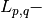

Warning
You are consulting the doc of a former version of PICOS. The latest version is HERE.
PICOS: A Python Interface for Conic Optimization Solvers¶

Welcome to the documentation of PICOS, a user-friendly python interface to many linear and conic optimization solvers, see more about PICOS in the introduction.
The latest version can be downloaded here, and can be installed by following these instructions.
This documentation contains a tutorial and some examples, which should already be enough for a quick start with PICOS. To go deeper, have a look at the picos reference, which provides information on every function of PICOS.
News
- 30 Jan. 15: Picos 1.0.2 Released
- Major release with following new functionalities:
- Support (read and write) for .cbf problem files (conic benchmark format ), which should be the standard for (mixed integer) conic optimization problems, cf. write_to_file and import_cbf .
- Improved support for complex SDP (more efficient implementation of to_real() , corrected bug in the implementation of the scalar product for Hermitian matrices and the conjugate of a complex expression, support for equality constraints involving complex coefficients)
- Support for inequalities involving the sum of k largest elements of an affine expression, or the k largest eigenvalues of a symmetric matrix expression, cf. the functions sum_k_largest() , sum_k_smallest() , sum_k_largest_lambda(), sum_k_smallest_lambda(), lambda_max() and lambda_min() .
- Support for inequalities involving the  norm of an affine expresison, cf. norm() .
- New vtype for antisymmetric matrix variables ( vtype = antisym).
- Constraints can be specified as membership in a Set . Sets can be created by the functions ball() , simplex(), and truncated_simplex() .
- New functions maximize and maximize to specify the objective function of a problem and solve it.
- And many thanks to Petter Wittek for the following improvements, who were motivated by the use of PICOS in the package ncpol2sdpa for optimization over noncommutative polynomials:
- More efficient implementation of the writer to the sparse - SDPA file format (write_to_file)
- Hadamard (elementwise) product of affine expression is implemented, as an overload of the ^ operator, cf. an example here .
- Partial transposition of an Affine Expression, cf. partial_transpose() or the Tx attribute.
- 19 Jul. 13: Picos 1.0.0 Released
with Semidefinite Programming Interface for MOSEK 7.0 !!!
Former changes are listed here.
PICOS Documentation contents